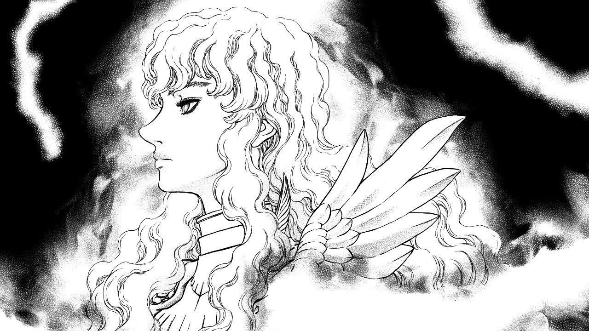

Acerca de Griffith :)
Griffith (グリフィス) es uno de los personajes principales y el principal antagonista del manga Berserk. Es un personaje de apariencia pulcra y andrógina que antiguamente era el líder de la Banda del Halcón, la banda de mercenarios a la que pertenecía Guts
Griffith de perfil siendo hermoso
Características de Griffith
- Es lindo
- No hizo nada malo lo prometo
- Tiene el cabello blanco
- Es literalmente un demonio ahora
- Es lindo
Los pana e Griffith
A lo largo de la obra Griffith ha tenido diversos compañeros que han cambiado con el paso del tiempo, por donde yo voy creo que no tiene amigos sino más bien subordinados, al inicio de la edad dorada si tenía amigos y le gustaba Guts (Es muy gay todo en esa parte el manga, por lo tanto es la mejor), igual prondré algun subordinado de Griffith y a la mano de dios